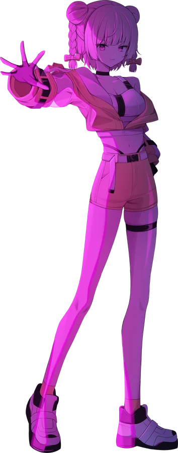
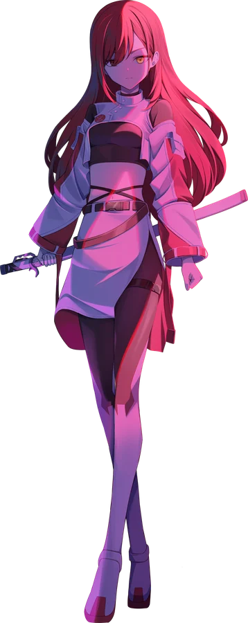
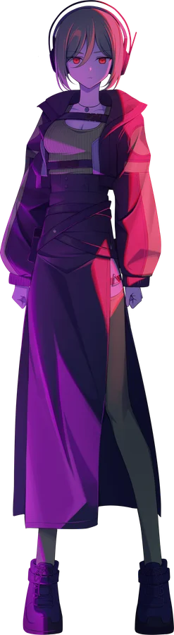
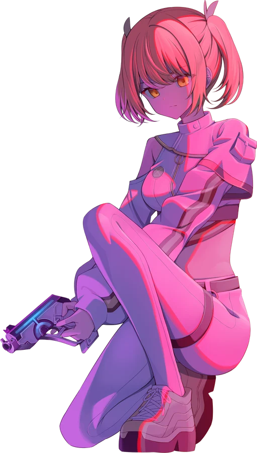

SK 아이젠 지원 포트폴리오 · 캐릭터 IP 기획 · Yoo Hyun
캐릭터 중점의
몰입형 애니메이션
콘텐츠 제작
버튜버 회사 창업 당시의 사업·콘텐츠 기획과, 기존 IP로 새롭게 접근한 최근 브랜딩을 담았습니다. 두 작업 사이에서 생각이 어떻게 이어졌는지 따라가 주세요.
2단계
창업 기획 → 기존 IP 리브랜딩
4영역
세계관 · 3D 영상 · 음악·효과음 · 디자인
1목표
3D 프리비즈 × AI 영상 생성 제작 도구
믹서스 · 라라란 실제 일러스트
키 비주얼 A — 믹서스 단체 컷 (창업 당시)
키 비주얼 B — 라라란 메인 일러스트 (최근 브랜딩)
창업 당시의 세계관(왼쪽 위)에서, 한 캐릭터의 성격에 집중한 최근 브랜딩(오른쪽 아래)으로.
자료를 읽는 법
기획과 참고, 완성된 작업을 구분해서 보여드립니다
- ● 기획제가 구상하고 설계한 것사업 구조, 세계관, 연출안, 콘텐츠 계획
- ● 참고 자료방향을 잡기 위해 본 사례무드보드, K-POP 브랜딩 사례, 레퍼런스 영상
- ● 완성 작업실제로 만들어진 결과물외주 일러스트·UI, 직접 만든 영상·3D
- ● 배운 점해 보고 나서 알게 된 것특히 외주 과정에서 얻은 교훈
각 장면의 점 색을 보면, 그 내용이 구상인지 결과물인지 바로 알 수 있습니다.
읽는 법
● 기획
기획서 표지 또는 세계관 문서 한 페이지
● 참고 자료
무드보드 · 레퍼런스 모음 캡처
● 완성 작업
완성된 일러스트 / 영상 스틸 대표 1장
● 배운 점
“결과물은 완성됐지만 기대와 달랐다.
요구사항을 구체적으로 전달하고,
중간에 확인하는 과정이 필요했다.”
요구사항을 구체적으로 전달하고,
중간에 확인하는 과정이 필요했다.”
로드맵
두 번의 시도와 다음 목표를, 네 장으로
1
창업 기획
사이버펑크 도시를 배경으로 캐릭터와 이야기, 3D 영상, 소리, 디자인을 하나로 묶었다.
- 사업 구조 · 세계관
- 캐릭터 역할 연결
- 3D 소개 영상 · 사운드 · 디자인
- 나의 역할
2
외주에서 배운 것
그림과 UI·UX 외주는 완성됐지만 기대와 달랐다. 차이는 전달 과정에서 생겼다.
- 진행 과정과 결과
- 요구사항 전달 · 중간 확인
3
라라란 브랜딩
기존 IP의 한 캐릭터, 라라란의 성격에서 대사와 시각 표현을 끌어냈다.
- 성격 → 대사 → 시각
- K-POP 사례와 해외 유입
- 숏폼·SNS · AI 영상 제작
4
이어진 생각, 다음 목표
3D 프리비즈와 AI 영상 생성을 연결한 전문가용 제작 도구.
- 한 장으로 보는 흐름
- 만들고 싶은 도구
- 맺으며
1·1
출발점 · 창업 당시
캐릭터의 설정이 영상과 방송에서도 자연스럽게
- ● 기획관심 — 설정이 화면 밖으로 새지 않게프로필 속 설정이 방송 말투·영상 연출과 따로 놀지 않는 캐릭터
- ● 기획그래서 세계관부터도시가 캐릭터가 그렇게 행동하는 '이유'가 되도록
- ● 기획역할을 이야기로 연결캐릭터마다 맡은 역할이 서로의 이야기와 맞물리게
- ● 기획영상·소리·디자인을 한 방향으로무엇을 보고 듣든 같은 세계라고 느껴지게
설정 문서 한 장이 방송 한 시간까지 이어지게 만드는 것이 목표였다.
구조도 · 재구성
설정이 콘텐츠까지 이어지는 흐름
설정
캐릭터 프로필
성격 · 과거 · 말버릇
→
세계관
사이버펑크 도시
구역 · 규칙 · 분위기
→
이야기
역할의 연결
관계 · 갈등 · 사건
콘텐츠 — 같은 세계로 느껴져야 하는 접점
🎥 3D 소개 영상📡 방송 오프닝·전환🎵 콘텐츠별 음악🔊 효과음🖼 일러스트🧩 방송 UI
세계관 콘셉트 아트 또는 기획서 첫 장 (가로형)
1·2
사업 구상
회사는 IP를 만들고, 콘텐츠가 그 IP를 키운다
- ● 기획핵심 자산은 캐릭터 IP캐릭터 · 세계관 · 시각 규칙을 회사가 보유
- ● 기획방송과 영상으로 팬을 만든다라이브 방송이 중심, 영상이 입구 역할
- ● 기획음악·굿즈·협업으로 넓힌다세계관이 단단할수록 확장이 쉬워진다
- ● 기획다시 IP로 돌아온다팬 반응이 다음 이야기와 캐릭터에 반영
※ 수치·매출 계획 등 세부는 실제 사업계획서 자료로 교체 예정
사업 구조 · 재구성
1·3
세계관
사이버펑크 도시, 구역마다 캐릭터가 산다
- ● 기획도시 하나를 무대로모든 캐릭터가 같은 도시에 산다는 전제
- ● 기획구역마다 다른 분위기상층·하층·시장·외곽 — 빛과 색이 다르다
- ● 기획구역이 곧 캐릭터의 배경사는 곳이 말투와 옷차림, 방송 배경이 된다
- ● 참고 자료분위기는 무드보드로 맞췄다네온, 비, 밀도 높은 간판 — 참고 이미지 모음
구역 이름·캐릭터 이름은 가상 표기입니다. 실제 설정 자료로 교체 예정.
도시 지도 · 가상 시안
도시 전경 / 지도 일러스트 (세로형 또는 정사각)
◆ 구역 01 · 상층
◆ 구역 02 · 시장
◆ 구역 03 · 하층
◆ 구역 04 · 외곽
구역 → 캐릭터
01 상층 → 캐릭터 A
02 시장 → 캐릭터 B
03 하층 → 캐릭터 C
04 외곽 → 캐릭터 D
02 시장 → 캐릭터 B
03 하층 → 캐릭터 C
04 외곽 → 캐릭터 D
● 참고 · 무드보드
네온 간판
비 내리는 골목
상층 스카이라인
시장 인파
1·4
캐릭터와 이야기
믹서스, 캐릭터별 역할이 하나의 이야기로 묶인다
- ● 기획캐릭터마다 도시 속 역할사이버펑크 버튜버 그룹 ‘믹서스’ — 멤버마다 도시 속 자리가 있다
- ● 기획역할 사이에 관계를 놓는다협력 · 경쟁 · 비밀 — 합동 방송의 소재가 된다
- ● 기획관계가 사건으로 이어진다개별 방송이 모여 하나의 큰 이야기로
멤버 사이의 관계는 합동 방송·콜라보를 기획하는 지도로 쓰려고 정리했다.
믹서스 멤버 · 실제 일러스트
MEMBER 01
MEMBER 02
MEMBER 03
MEMBER 04

MEMBER 05
MEMBER 06
MEMBER 07
MEMBER 081·5
3D 공간 소개 영상
도시를 먼저 보여주고, 캐릭터를 등장시킨다
- ● 기획3D로 도시 공간을 만든다카메라가 실제로 지나갈 수 있는 공간
- ● 기획하늘에서 골목까지 내려간다전경 → 구역 → 캐릭터의 거점 순서
- ● 기획캐릭터가 자기 구역에서 등장공간이 캐릭터 소개를 대신한다
- ● 완성 작업 · 직접영상·3D 경험으로 연출 검토카메라 동선 · 컷 길이 · 전환 타이밍 확인
“3D로 먼저 잡아 보면 연출 판단이 빨라진다” — 4장에서 다시 이어지는 생각.
스토리보드 · 가상 시안
SHOT LIST — 소개 영상 (약 60초 가정)
S1 도시 전경
0:00 · 와이드 · 하강
S2 상층 → 하층
0:08 · 트래킹
S3 골목 진입
0:16 · 돌리 인
S4 캐릭터 등장
0:24 · 미디엄
S5 로고
0:52 · 정면
타임라인
영상 / 음악 · 테마 A → 테마 B
3D 작업 화면 캡처 (Blender 등)
● 직접 검토한 것 (예시)
카메라 높이 변화가 너무 급하지 않은지 · 캐릭터 등장 전 ‘머무는 시간’ · 음악 전환과 컷 전환의 박자
카메라 높이 변화가 너무 급하지 않은지 · 캐릭터 등장 전 ‘머무는 시간’ · 음악 전환과 컷 전환의 박자
1·6
음악 · 효과음 · 디자인 방향
콘텐츠마다 소리와 화면의 규칙을 정했다
- ● 기획콘텐츠 유형을 나눈다소개 영상 · 일상 방송 · 이벤트 방송 · 숏폼
- ● 기획유형별 음악과 효과음같은 세계, 다른 온도
- ● 기획디자인 톤을 맞춘다색 · 글꼴 · UI 모양의 공통 규칙
- ● 참고 자료레퍼런스로 방향을 공유외주 작가와 같은 그림을 보기 위해
사운드·디자인 가이드 · 재구성
| 콘텐츠 | 음악 | 효과음 | 디자인 톤 |
|---|---|---|---|
| 3D 소개 영상 | 신스웨이브 · 느린 빌드업 | 도시 앰비언스, 비 | 시안 · 네온 |
| 일상 방송 | 로파이 · 루프 | 짧은 UI 비프음 | 저채도 · 따뜻함 |
| 이벤트 방송 | 업템포 일렉트로닉 | 글리치 · 경보음 | 마젠타 · 고대비 |
| 숏폼 | 훅 4초 · 시그니처 사운드 | 캐릭터별 효과음 | 세로형 · 큰 자막 |
참고 · 컬러 팔레트
참고 · 방송 UI 레퍼런스
참고 · 로고·타이포
참고 · 음악 레퍼런스 목록
※ 표 내용은 레이아웃용 예시 — 실제 기획 문서 내용으로 교체 예정
1·7
나의 역할
구상하고, 검토하고, 맡기고, 확인했다
- ● 직접사업과 콘텐츠의 방향 구상무엇을 만들고 어떻게 보여줄지
- ● 직접영상·3D 경험으로 연출 검토카메라 · 컷 · 전환을 직접 판단
- ● 외주 의뢰 · 확인그림 · UI·UX 디자인의뢰서를 쓰고 결과물을 확인
세 번째 줄 — ‘맡기고 확인하는’ 일에서 가장 많이 배웠다. 다음 장에서.
역할 표
구상
제작 · 검토
최종 확인
사업 · 콘텐츠 방향
직접
직접
직접
세계관 · 3D 영상 연출
직접
연출 검토
직접
캐릭터 일러스트
요구사항 작성
외주
결과 확인
UI · UX 디자인
요구사항 작성
외주
결과 확인
사업 기획서 일부
연출 검토 메모 / 3D 화면
외주 의뢰서 캡처
2·1
그림 · UI·UX 외주
외주는 완성됐지만, 기대와 차이가 있었다
- ● 기획의뢰 — 방향과 레퍼런스 전달세계관 문서와 참고 이미지를 함께 보냈다
- ● 완성 작업납품 — 결과물은 완성됐다일러스트와 UI 디자인 모두 받았다
- ● 배운 점그런데 머릿속 그림과 달랐다분위기 · 디테일 · 쓰임새에서 어긋남
돌아보면 결과물보다 원하는 것을 구체적으로 전달하고 중간에 맞춰 보는 과정이 부족했다.
비교 · 가상 시안
내가 기대한 것 (의뢰 시 레퍼런스)
의뢰 때 보낸 레퍼런스 / 내 러프
받은 결과물 ● 완성
납품된 일러스트 또는 UI
어긋난 지점 (예시 — 실제 내용으로 교체)
분위기 — 네온의 ‘밀도’디테일 — 의상 설정 반영쓰임새 — 방송 화면에 얹었을 때
2·2
배운 것
차이는 결과가 아니라 전달 과정에서 생겼다
- ● 배운 점요구사항은 구체적으로형용사 대신 예시 · 금지 예시 · 수치
- ● 배운 점쓰임새까지 함께 전달어디에, 어떤 크기로, 무엇과 같이 쓰이는지
- ● 배운 점중간에 확인한다러프 → 중간 → 최종, 세 번의 체크포인트
이 경험이 지금의 관심으로 이어졌다 — 의도를 정확히 전달하고 확인할 수 있는 도구.
의뢰 방식 · 전 / 후
그때의 의뢰서 (재구성 예시)
“사이버펑크 느낌으로,
화려하고 멋있게”
— 레퍼런스 이미지 몇 장
— 마감일
화려하고 멋있게”
— 레퍼런스 이미지 몇 장
— 마감일
진행
의뢰납품 · 첫 확인
실제 의뢰서 / 대화 캡처 (민감 정보 가림)
지금이라면
✓ 이렇게 / 이렇게는 말고
좋은 예 3장 + 피할 예 2장, 각 이유 한 줄
좋은 예 3장 + 피할 예 2장, 각 이유 한 줄
✓ 숫자로
색 코드 · 비율 · 해상도 · 선 굵기
색 코드 · 비율 · 해상도 · 선 굵기
✓ 쓰이는 화면 목업
방송 화면 위에 얹었을 때의 위치·크기
방송 화면 위에 얹었을 때의 위치·크기
진행
의뢰러프중간최종
지금 쓰는 의뢰서 템플릿 / 체크리스트
3·1
최근 브랜딩 · 기존 IP 활용
라라란, 성격 하나에서 대사와 그림이 나온다
- ● 기획세계관 대신 성격을 중심에창업 때는 도시에서, 이번엔 한 캐릭터의 성격에서 시작
- ● 기획성격 → 말투와 대사어떤 말을 하고, 어떤 말은 절대 안 하는지
- ● 기획성격 → 표정·포즈·색시각 표현도 같은 성격에서 끌어낸다
2장의 교훈을 적용 — 성격을 구체적인 규칙으로 써 두면, 누가 그려도 같은 캐릭터가 된다.
라라란 설정화 · 실제 일러스트
라라란 전신 설정화
성격 키워드 (예시)
#당당함#허당#다정함#승부욕
말투 규칙 (예시)
○ 스스로를 ‘라라란’이라 부르며 자신만만
○ 실수하면 인정 대신 딴청
✕ 냉소·비꼬기는 쓰지 않는다
○ 실수하면 인정 대신 딴청
✕ 냉소·비꼬기는 쓰지 않는다
시각 규칙 (예시)
체리 핑크 · 핑크 · 화이트 · 아이 블루
정면
측면
후면
3·2
대사 · 시각 표현 구체화
같은 성격, 상황마다 다른 한마디
- ● 기획방송 상황을 나눈다인사 · 칭찬받을 때 · 실수했을 때 · 마무리
- ● 기획상황마다 대사와 표정을 짝짓는다대사를 읽으면 표정이 떠오르도록
- ● 기획숏폼·AI 제작의 기준표로 쓴다누가, 어떤 도구로 만들어도 같은 캐릭터
※ 대사는 레이아웃용 예시 문장 — 실제 대사 시트로 교체 예정
대사 시트 · 가상 시안
방송 인사
“라라란이 오늘도 기다리고 있었어요! 박수~!”
칭찬받을 때
“흥, 당연하죠. 라라란이니까요… 그, 그래도 고마워요.”
실수했을 때
“지금 건… 연습이었어요. 진짜는 지금부터예요!”
마무리
“내일도 딸기처럼 상큼하게 만나요. 라라란과의 약속이에요!”
이 표가 쓰이는 곳 →숏폼 대본AI 이미지 프롬프트음성·TTS 톤외주 의뢰서
3·3
K-POP 브랜딩 사례 참고
해외 팬이 들어오는 순서를 설계했다
- ● 참고 자료K-POP의 해외 유입 방식짧은 영상으로 발견 → 따라 하기 → 팬 커뮤니티
- ● 기획말보다 동작·표정으로 먼저언어를 몰라도 이해되는 시그니처 포즈·리액션
- ● 기획다국어 자막과 짧은 인사영어·일본어 한마디로 친근함
- ● 기획라이브와 커뮤니티로 붙잡는다발견한 사람이 머무는 곳을 만든다
유입 퍼널 · 재구성
① 발견
숏폼에서 우연히
알고리즘 · 해시태그 · 밈
② 따라 하기
시그니처 포즈 · 리액션
말이 필요 없는 캐릭터 표현
③ 이해
다국어 자막 · 인사
④ 머무름
라이브 · 커뮤니티
참고 · K-POP 사례 캡처 모음
3·4
숏폼 · SNS 콘텐츠 계획
일주일 단위로 돌아가는 숏폼 계획
- ● 기획포맷을 네 가지로 고정대사 숏츠 · 리액션 · 그림 과정 · 비하인드
- ● 기획요일에 포맷을 배치매주 같은 리듬으로 기대를 만든다
- ● 기획플랫폼마다 다르게 자른다같은 소재, 길이·자막·첫 장면만 바꾼다
※ 요일·포맷 배치는 레이아웃용 예시입니다.
콘텐츠 캘린더 · 가상 시안
월
화
수
목
금
토
일
대사
리액션
대사
그림 과정
비하인드
대사 숏츠 (9:16)
상황 한 컷 + 한마디
리액션 (9:16)
유행·팬 댓글에 반응
그림 과정 (9:16)
러프 → 완성 타임랩스
비하인드 (9:16)
설정 · 제작 과정
플랫폼별 →
숏폼 A · 15초 · 훅 우선숏폼 B · 30초 · 음악 중심SNS 피드 · 정지 컷 + 대사
3·5
AI 도구를 연결한 영상 제작 구상
AI 도구를 이어 붙인 제작 흐름 — 그리고 남은 과제
- ● 기획대사 시트 → 대본3·2의 규칙을 그대로 넣는다
- ● 기획키 이미지 → 영상 생성캐릭터 시트를 기준 이미지로
- ● 기획음성 · 음악 → 편집톤은 성격 규칙에 맞춘다
- ● 남은 과제스타일 일관성과 연출 의도컷마다 얼굴·색이 흔들리기 쉽고, 카메라를 말로만 지시하게 된다
파이프라인 · 재구성
01
대본
텍스트 생성
→
02
키 이미지
이미지 생성
→
03
영상
영상 생성
→
04
음성·음악
TTS · 음악
→
05
편집
자막 · 컷
생성 컷 1
생성 컷 2
생성 컷 3
● 구상하며 보인 과제
일관된 스타일
컷마다 얼굴 · 의상 · 색이 조금씩 달라지기 쉽다
컷마다 얼굴 · 의상 · 색이 조금씩 달라지기 쉽다
의도한 연출
카메라 각도 · 동선 · 타이밍을 말로만 지시해야 한다
카메라 각도 · 동선 · 타이밍을 말로만 지시해야 한다
4·1
한 장으로 보는 흐름
창업 기획에서 브랜딩으로, 생각은 이렇게 이어졌다
- ● 창업 기획세계관에서 출발한 캐릭터도시 · 역할 · 3D 영상 · 사운드 · 디자인
- ● 외주의도를 전달하고 확인하는 일의 중요성구체적 요구사항과 중간 확인의 중요성
- ● 최근 브랜딩성격에서 출발한 캐릭터대사 · 시각 규칙 · 숏폼 · AI 제작
- ● 공통된 질문“의도한 그대로 화면에 나오게 하려면?”사람에게 맡기든 AI에게 맡기든 같은 문제
흐름도
4·2
앞으로 만들고 싶은 것
3D로 의도를 잡고, AI로 화면을 완성하는 전문가용 도구
- ● 구상3D 프리비즈로 연출을 고정구도 · 카메라 · 동선 · 타이밍을 말 대신 공간으로
- ● 구상캐릭터 시트로 스타일을 고정얼굴 · 의상 · 색 · 표정 규칙을 기준값으로
- ● 구상AI 생성은 프리비즈를 따라간다깊이 · 포즈 · 카메라 정보를 생성에 연결
- ● 구상중간 확인을 도구 안에샷별 비교 · 코멘트 · 재생성 — 2장의 교훈
도구 화면 · 가상 시안
SHOTS
S01 · 와이드
S02 · 돌리 인
S03 · 클로즈업
S04 · 리액션
3D PREVIS
AI 생성 결과 (프리비즈를 따른 컷)
STYLE LOCK
캐릭터 기준 이미지
얼굴 ● 고정
의상 ● 고정
팔레트 ● 체리 핑크
표정 ○ 샷별
의상 ● 고정
팔레트 ● 체리 핑크
표정 ○ 샷별
REVIEW
💬 S02 — 표정 더 자신만만하게
✓ S01 승인
✓ S01 승인
TIMELINE · 버전 비교
v1v2v3 · 비교 중재생성
4·3
맺으며
기획한 캐릭터를, 의도한 그대로 화면에 옮기는 사람
01
기획에서 연출까지 본다
세계관과 캐릭터를 설계하고, 영상·3D 경험으로 그것이 화면에서 어떻게 보일지 직접 검토해 왔습니다.
02
의도를 전달하는 법을 배웠다
외주에서 겪은 차이를 통해, 요구사항을 구체적으로 쓰고 중간에 확인하는 과정의 중요성을 체감했습니다.
03
도구로 그 문제를 풀고 싶다
3D 프리비즈와 AI 영상 생성을 연결해, 일관된 스타일과 의도한 연출을 구현하는 전문가용 제작 도구를 만들고 싶습니다.
SK 아이젠 지원 · Yoo Hyun
감사합니다.
연락처 · 이메일 / 포트폴리오 링크 (추후 입력)
getlynow.com
getlynow.com